Префектура Сига · Такасима · озеро Бива
Тайное озеро Бива: святилище в воде, родники во дворах и рыба, ради которой чистят реку
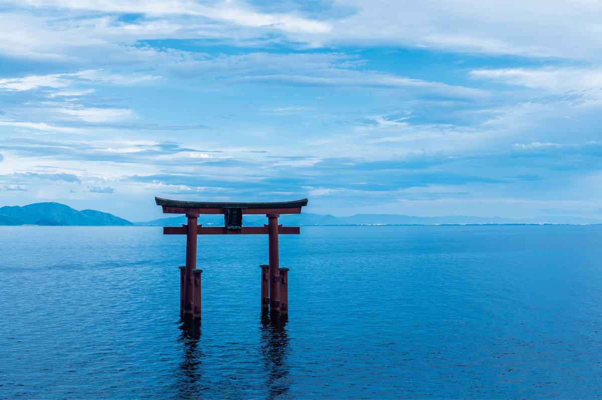
Озеро Бива входит в два десятка древнейших озёр мира и поит 14,5 миллиона жителей региона Кинки. На его западном и северном берегах до сих пор живут так, будто вода здесь главный сосед: ей молятся, её берегут и с неё кормятся.
Наследие
Озеро, которому молятся
Бива самое большое пресноводное озеро Японии, и воды в нём стоят уже около четырёх миллионов лет. По его берегам широко почитают Якуси Нёрая, будду врачевания и владыку «чистой земли воды», а храмы и святилища, построенные в его честь, и сегодня собирают много верующих.
Не меньше, чем молитва, здесь сохранился быт. Люди каждый день пользуются родниковой водой и стараются её не загрязнять. На озере держатся старые способы рыбной ловли, а из риса и рыбы, которая водится только в Бива, готовят местную еду, прежде всего фунадзуси, ферментированного карася. Этот пейзаж, где вода и человек живут рядом, внесли в список «Японского наследия» под названием «Озеро Бива и его прибрежные пейзажи: водное наследие молитвы и жизни».
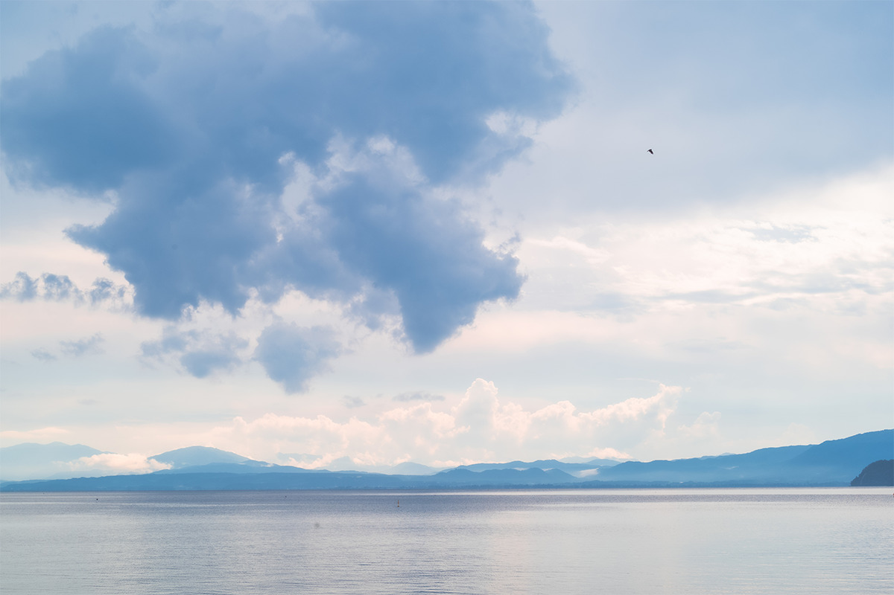
Самое интересное начинается на западном берегу, в городе Такасима, и продолжается вдоль северного берега озера. Здесь сохранились домашние блюда на брожении, кухня из озёрной рыбы, жизнь, подстроенная под воду, и почитание местных богов.
Святилище
Сирахигэ: ворота посреди озера
Путешествие удобно начать со святилища Сирахигэ на берегу озера в Такасиме. Ему больше двух тысяч лет, и это старейшее крупное святилище края Оми. Главный зал построили по последней воле Хидэёси Тоётоми.
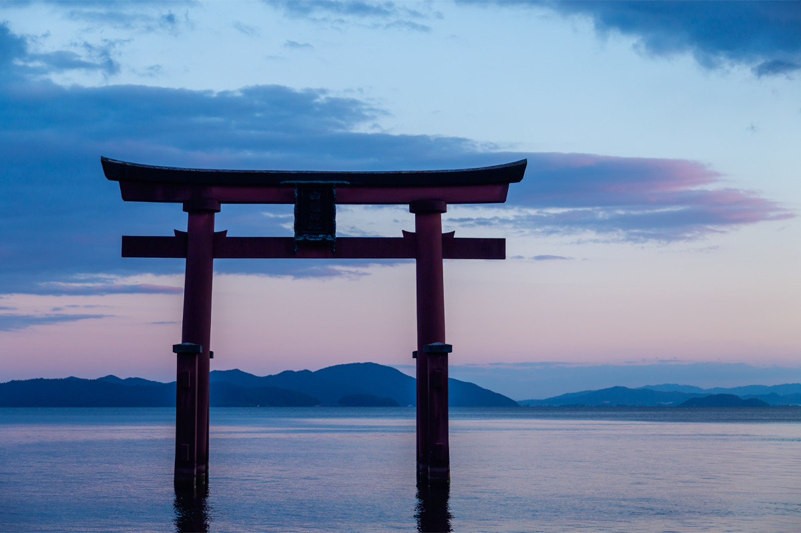
Сначала стоит поклониться в главном зале, а потом выйти к воде. Из озера поднимаются огромные красные ворота тории, и, глядя на них на фоне бескрайней Бива, легко понять, почему здешние люди так почитают природу.
«Здешнего бога почитают как „бога, открывающего путь“ во всех человеческих делах. Когда начинают что-то новое, у него просят защиты, чтобы дело пошло в хорошую сторону. Раньше сюда приплывали молиться на лодках»
настоятель святилища
Святилище Сирахигэ
- Адрес
- префектура Сига, Такасима, Укава, 215
- Телефон
- +81 740-36-1555
- Часы работы
- контора святилища 9:00–17:00
- Цены / Вход
- бесплатно
- Как добраться
- от станции Киото по линии JR Косэй на скором поезде до станции Оми-Такасима около 40 минут, оттуда на прокатном велосипеде около 15 минут, пешком около 40 минут, на такси около 5 минут. На машине от развязки Киото-Хигаси около 45 минут, от развязки Киномото около 55 минут.
Родники
Харие: деревня, где вода течёт через дом
Такасима издавна была перекрёстком дорог между столицами Киото и Нара и побережьем Хокурику. Город окружён лесами, деревнями и озером, и здесь рождается треть всей воды, которая втекает в Бива. Лучше всего увидеть, как тесно жизнь связана с водой, можно в квартале Харие района Синасахи.
Вдоль улиц стоят японские дома с чёрными стенами из обожжённого кедра, а между ними бегут каналы. Родниковую воду в них называют «сёдзу», живая вода, и берегут её с давних времён. Река Харие-огава удивляет прозрачностью.
«Семьдесят процентов воды в этой реке родниковая. Дождь и снег, которые падают на горы Хира, годами просачиваются в землю и выходят подземным потоком. Поэтому вода такая чистая»
гид комитета «Харие Сёдзу-но-сато»
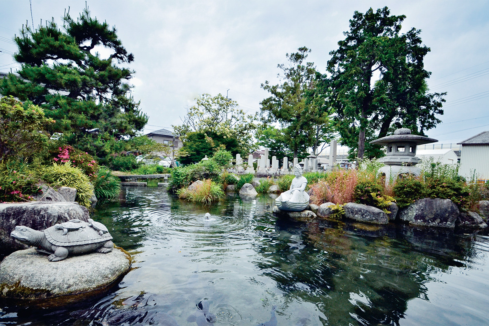
Родник сам выходит из-под земли в разных точках квартала, и система, которая направляет его в дома, называется «кабата», то есть «у реки».
«Вода круглый год держится около 14 градусов: зимой она тёплая, летом холодная. Вместо холодильника в ней охлаждают овощи и арбузы, это летняя картина Харие. В ней и сейчас моют овощи и посуду, а в соседнем прудике у многих семей плавают карпы»
гид комитета «Харие Сёдзу-но-сато»
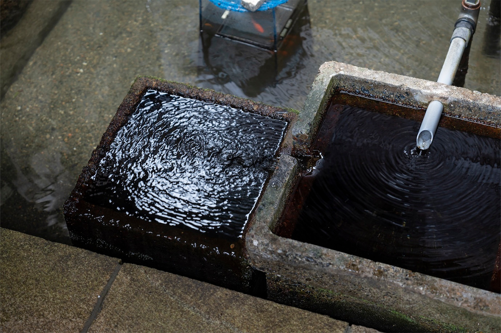
Карпы подъедают обрезки овощей, вода очищается и снова уходит в реку чистой. Получается замкнутый круг, о котором сегодня говорят как об устойчивом развитии, а здесь он работает с незапамятных времён.
«Те, кто живёт выше по течению, думают о тех, кто ниже, и не пачкают воду. Около половины из примерно 50 видов рыб озера Бива поднимается на нерест в реку Харие-огава, поэтому четыре раза в год вся деревня выходит чистить русло. Здесь живут скромно, уважают природу и берегут связь между людьми и водой. Поэтому и сложилась родниковая культура, какой больше нет нигде в мире»
гид комитета «Харие Сёдзу-но-сато»
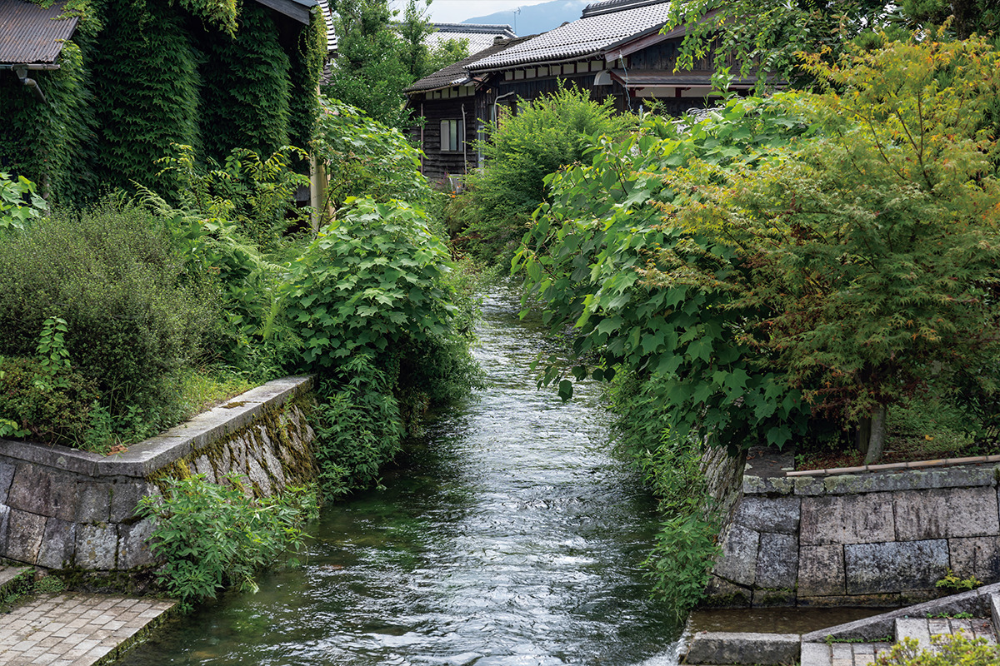
«Харие Сёдзу-но-сато»
- Адрес
- префектура Сига, Такасима, Синасахи, Харие, 372
- Телефон
- +81 740-25-6566 (комитет «Харие Сёдзу-но-сато»)
- Часы работы
- экскурсии в 10:00 и 14:00
- Цены / Вход
- экскурсия с гидом, 1 час, 1000 иен с человека, бронирование за неделю
- Сайт
- harie-syozu.jp
Рыба
Ловушка для аю на реке Тинай
Чистая вода из деревень уходит в Бива, и в ней растёт озёрная рыба. О ней рассказал рыбак рыболовного кооператива «Момосэ», который ловит рыбу по старинке, способом «яна». Течение реки перегораживают, и рыба аю, которая идёт вниз по реке, попадает в загон из деревянных кольев и бамбука.
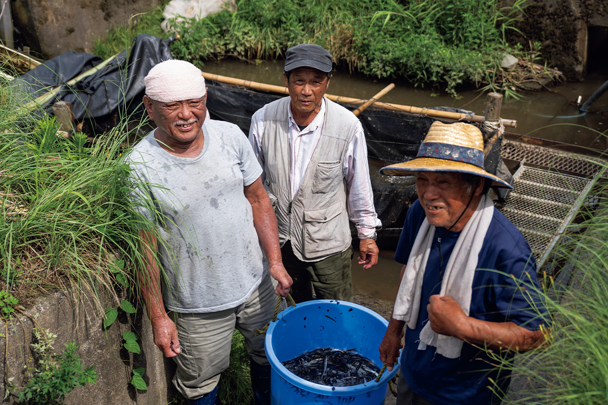
«Многие рыбы живут только в озере Бива, и их испокон веку едят дома. Эта привычка жива до сих пор. Почти все рыбаки здесь чем-то занимаются ещё, но ловить не бросают: мы чувствуем, что должны сохранить здешнюю кухню»
рыбак кооператива «Момосэ»
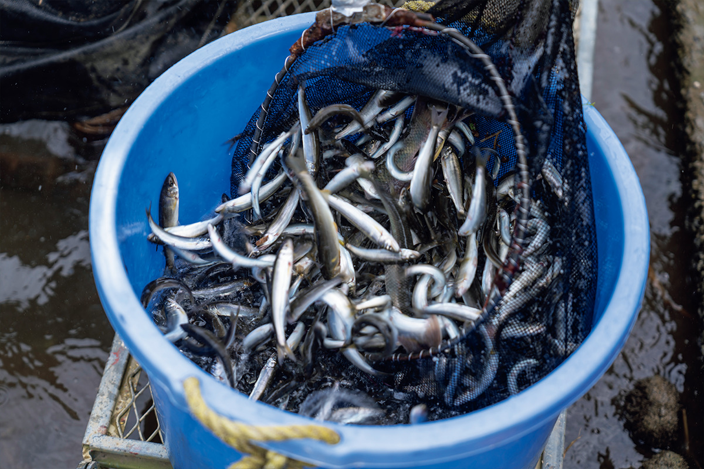
Пейзаж здесь держится на желании жить вместе с водой и передать её следующим поколениям.
Аллея
Метасеквойи в Макино
На севере Такасимы, через агропарк «Макино пик-лэнд», проходит дорога, вдоль которой примерно на 2,4 километра посажено около 500 метасеквой. Весной, летом, осенью и зимой аллея выглядит по-разному, и ради неё сюда приезжают в любое время года.
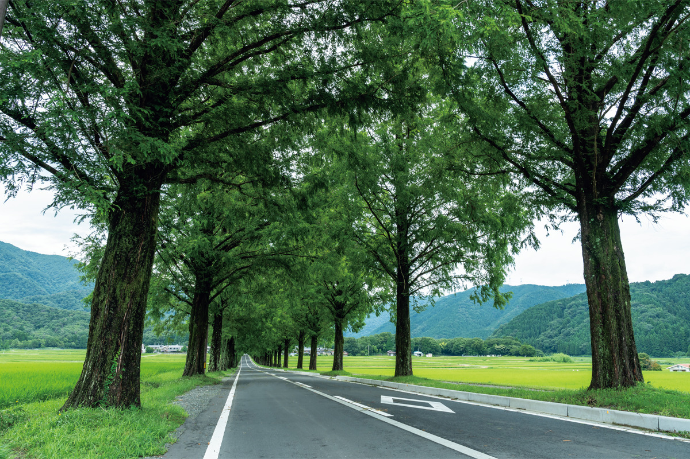
Аллея метасеквой
- Адрес
- префектура Сига, Такасима, Макино, от Хиругути до Макино
- Телефон
- +81 740-33-7101 (туристическая ассоциация Бивако-Такасима)
- Как добраться
- останавливаться и парковаться на дороге у аллеи нельзя
Маршрут
Дальше на север: Сугаура, Нагахама и Самэгаи
От Такасимы маршрут идёт вокруг северной оконечности озера. Деревню Сугаура на самом севере Бива писательница Масако Сирасу назвала «скрытой деревней», а Нагахаму зовут «краем Каннон»: здесь много статуй одиннадцатиликой Каннон, и молиться им приходят до сих пор.
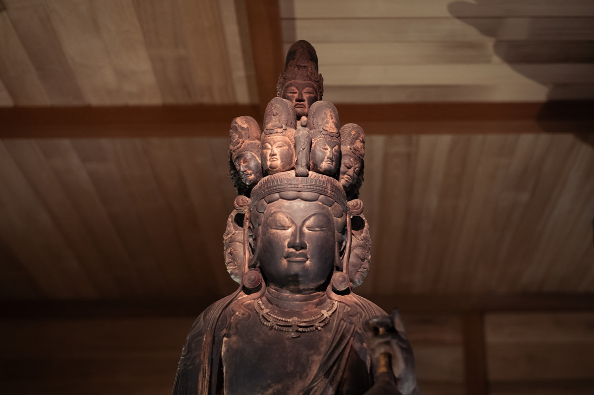
Озеро вырастило и свою кухню: фунадзуси, обеды из озёрной рыбы в ресторане «Корияан» и ночлег в рёкане «Бэниаю» с видом на Бива. Закончить путешествие можно в Майбаре, на старой почтовой станции Самэгаи, где из горы Рёдзэн бегут родники.

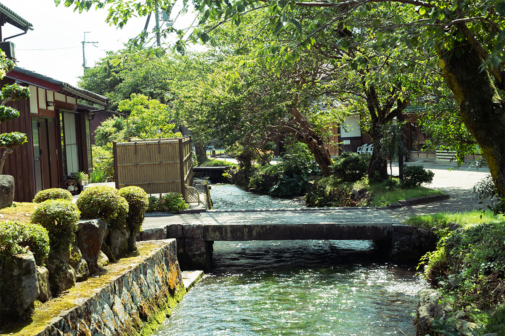
Если собрать всё в один маршрут, получится так: святилище Сирахигэ, каналы кабата в Харие, аллея метасеквой, обед в «Корияан», прогулка по Сугауре, одиннадцатиликая Каннон в Нагахаме, ночь в «Бэниаю» и родники Самэгаи.
Фото: Садахо Найто, Роберт Иппэй.